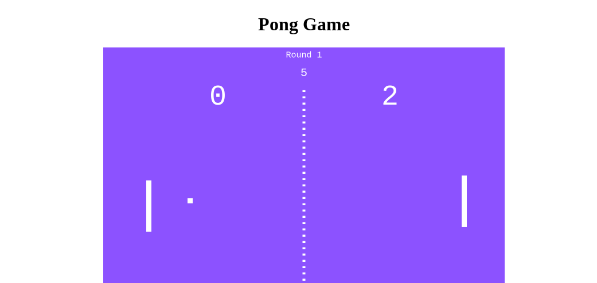

Project 1: Pong Game
Play Pong Game! This game was my first project for this class. I followed a YouTube tutorial on how to make the pong arcade game using strictly HTML and Java. Click on the link to test it out!
What up what up! My name is Kody Nguyen and I am a junior at Mt. Eden High School learning the fundamentals of computer science. Throughout the year, I have learned how to use multiple programming languages and structure them accordingly. Although at first it was challenging beginning with C++ with a new teacher, I eventually adapted to creating functions, loops, and much more. Similarly, when Java and HTML were first introduced to me, I have become well equipped over time. Below reveals my proudest projects this year that display my skills within the field!
This game was my first project for this class. I followed a YouTube tutorial on how to make the pong arcade game using strictly HTML and Java. Click on the link to test it out!
This was the third project for this class and it was a group assignment. We were not allowed to follow any tutorials and had limited outside help. This game is a cookie clicker replica with ranks and upgrades like an autoclicker and double clicks, all created using HTML, CSS, and Java. Try it above!
This game was my final project for this class and was completed solo without outside help. I used HTML, CSS, and Java to make this game and turned it into the College Board. When playing, there are two separate game modes: one where you can pick the secret number, and one where it is computer-generated. After you guess a random number from 1-100, it will tell you whether it is higher or lower until the correct number is submitted. Click the link to test it out!